01 / 15
ML-Assisted PVT-Robust Standard-Cell Optimization
Digital IC Design course project · Umesh Mangalekar
SKY130-calibrated compact MOSFETs · HistGB surrogate · NSGA-II · Liberty · 8-bit adder STA
02 / 15
The problem
- Every manufactured transistor is a random variable (corners + Pelgrom).
- Delay, leakage and yield fight each other.
- Industrial answer: SPICE characterization → .lib → STA, with an optimizer in the loop.
- Student constraint: free tools, laptop, no 40 GB PDK/OpenROAD stack.
03 / 15
What we actually built
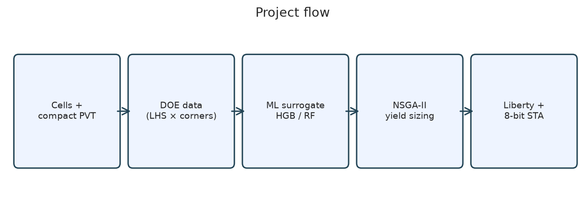
04 / 15
Compact model, pinned to SKY130
α-power + subthreshold. Ion 520/245 µA/µm. FO4 = 45.0 ps (target 45 ps).
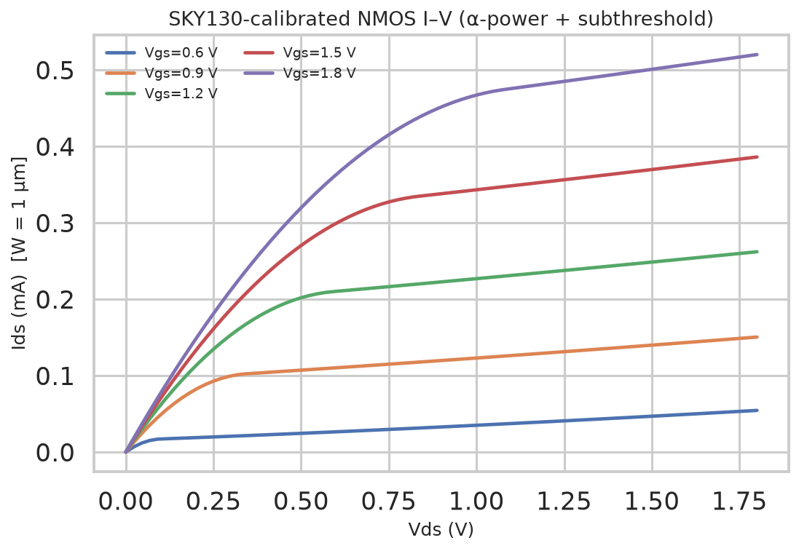
05 / 15
PVT behaviour is physical
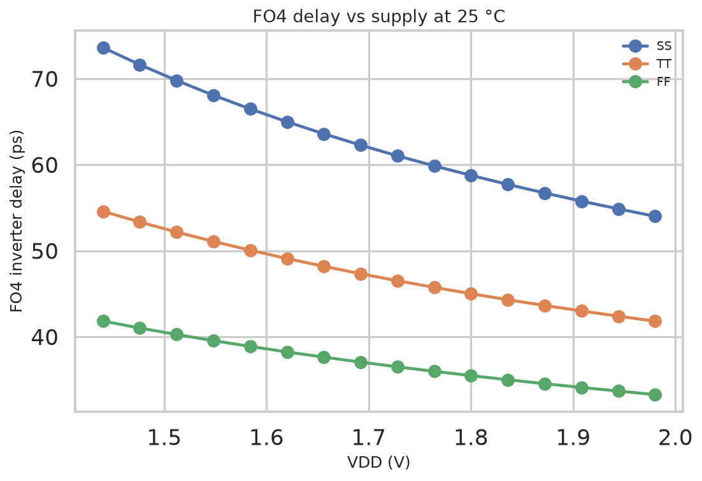
06 / 15
Leakage vs temperature
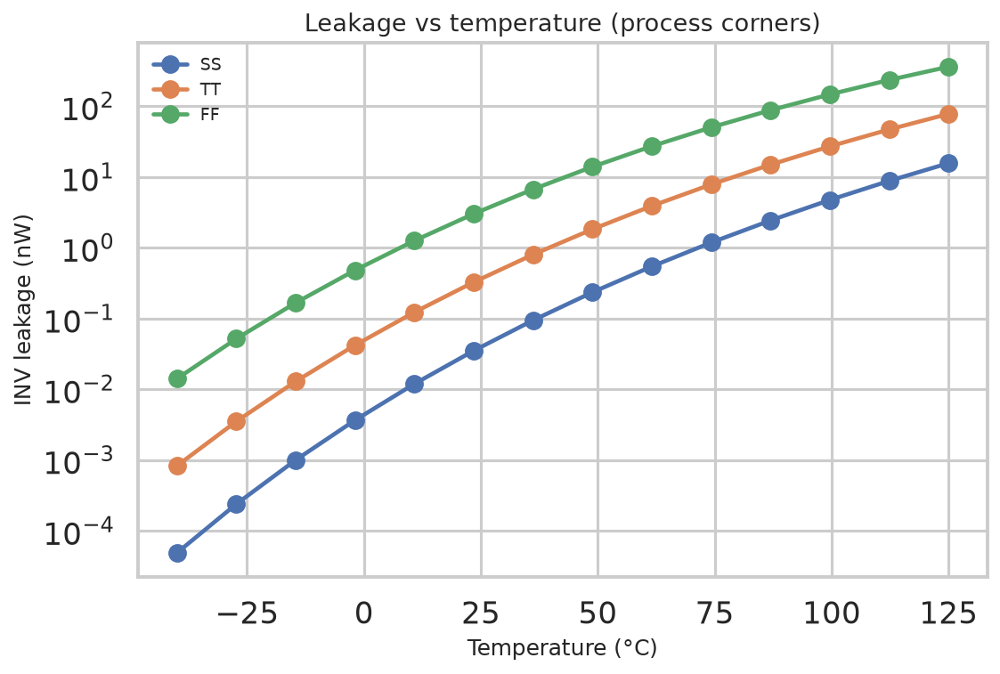
07 / 15
Mini library
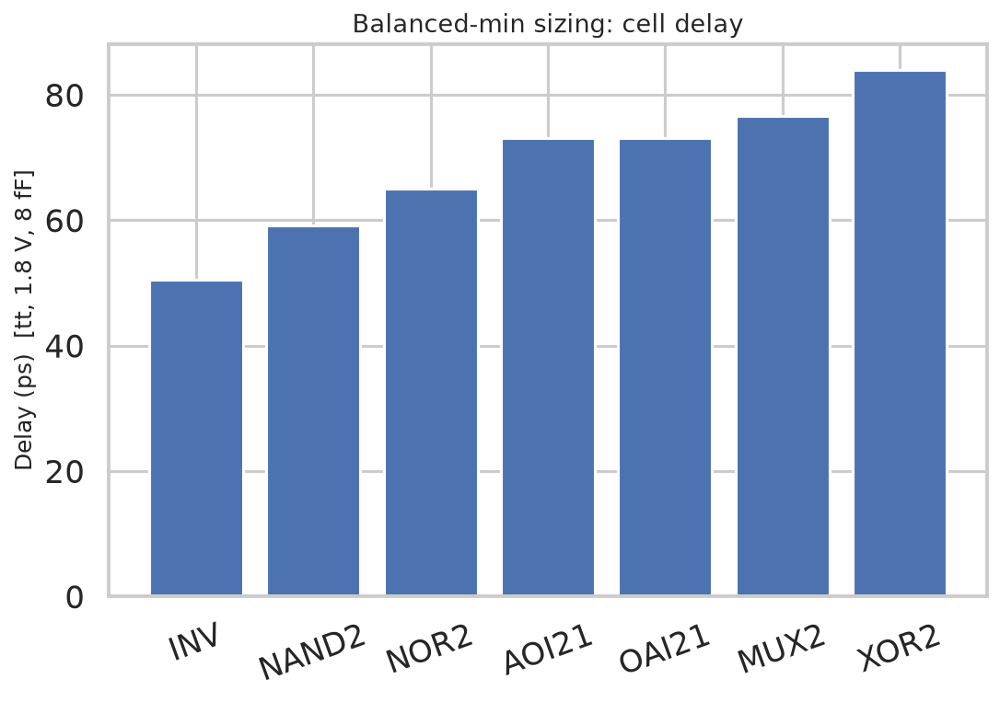
08 / 15
The dataset we had to generate
9000 LHS samples × cells × corners. No public sizing dataset exists.
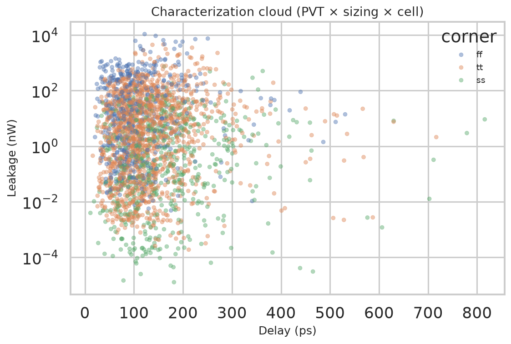
09 / 15
Surrogate accuracy
HistGB delay test R² = 0.962 vs Ridge 0.681.
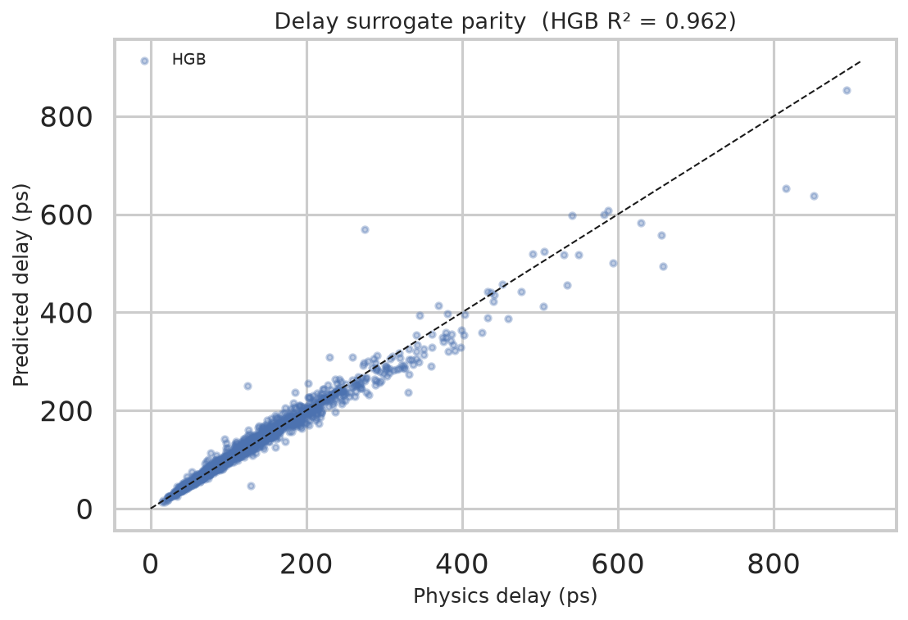
10 / 15
What the model listens to
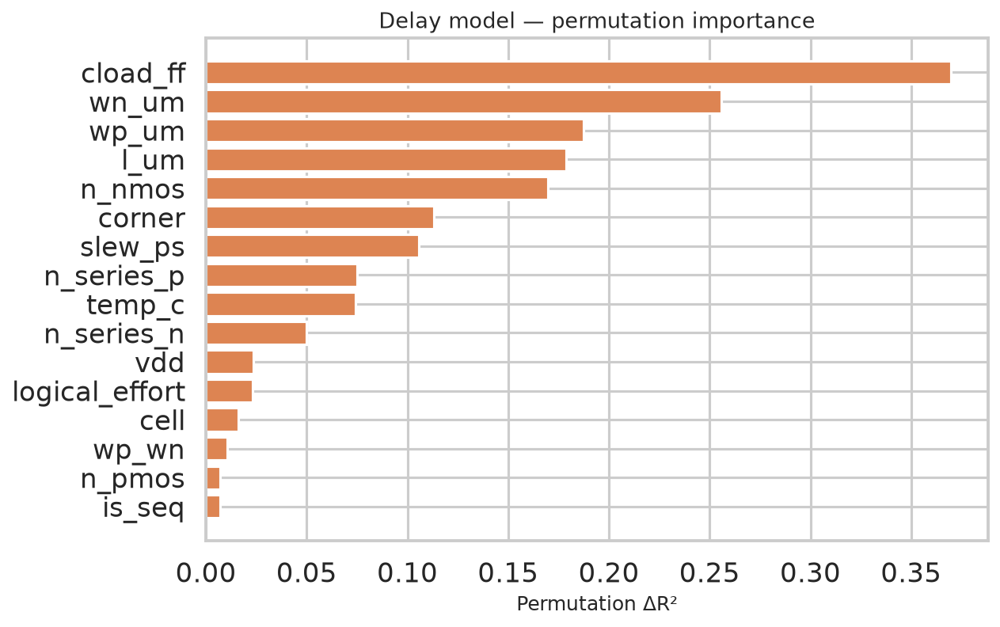
11 / 15
NSGA-II Pareto fronts
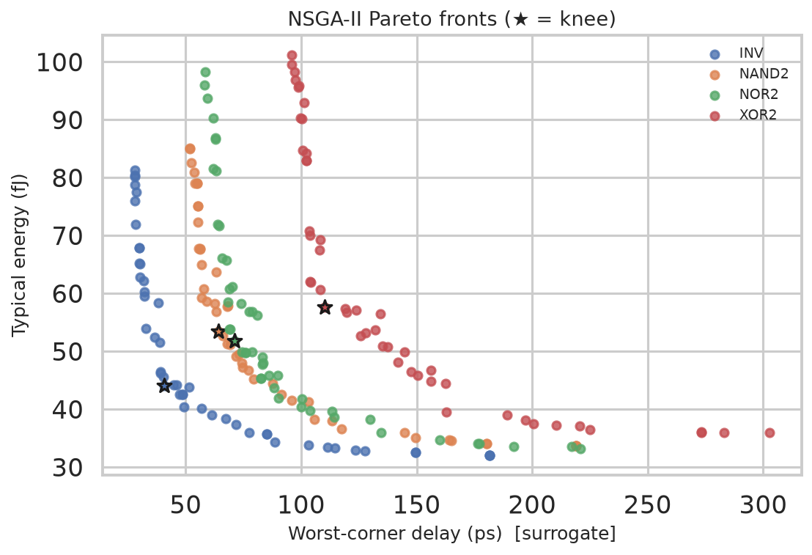
12 / 15
Physics sign-off: yield
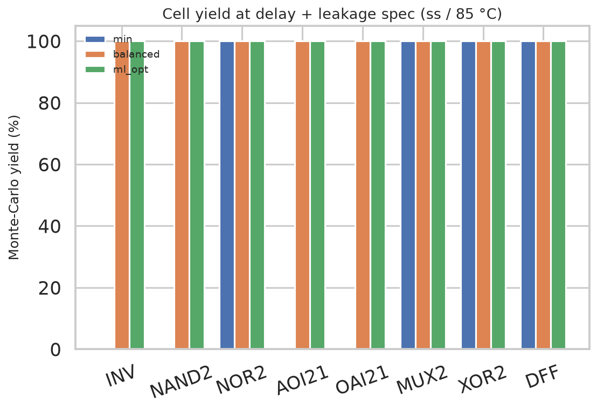
13 / 15
8-bit registered adder STA
tt Fmax 614 MHz · ss/125 °C Fmax 426 MHz · yield @ 400 MHz 96.4%
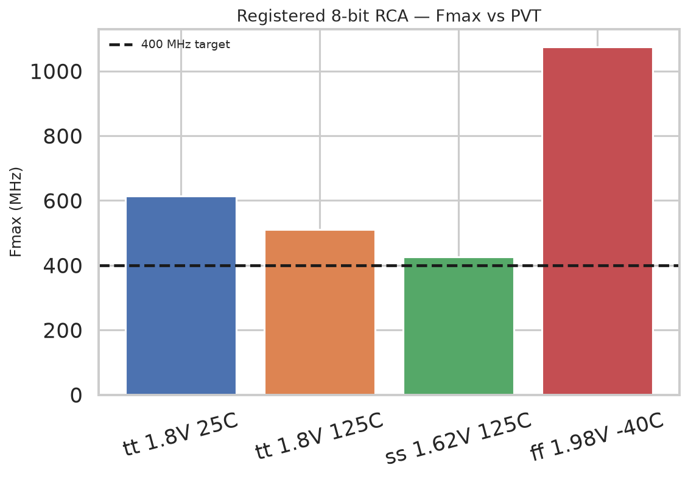
14 / 15
Block-level Monte Carlo
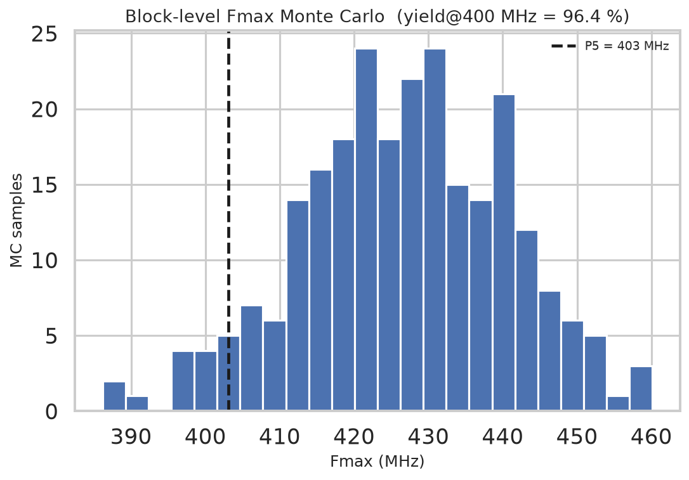
15 / 15
Take-aways
- Methodology matches an industrial library team; tools are FOSS and laptop-sized.
- ML is used where it belongs: as a SPICE surrogate inside a multi-objective sizer.
- Every number in the report is regenerated by
python run_project.py. - Honest limits: compact MOS, not BSIM; ideal clock; no GDS extraction.
← → or space to navigate